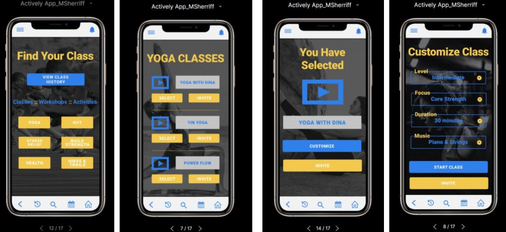

PHASE 1: Product Strategy - pitching a product vision
Kaiser Permanente is looking to enter into the preventative care space to help their patient base increase physical activity and improve on healthy habits. This product vision presentation includes:
*Clear identification of the problems to solve
*Calculation of the total addressable market (TAM)
*Calculation of the return on investment (ROI)
*Competitor analysis
*Vision and strategy roadmap

PHASE 2: Product Design - running a design sprint
Using design-thinking methodologies, possible solutions to the problem/opportunity identified in phase 1 are further explored and the idea for the Actively app is taken through concept, design, and user validation phases. This product design presentation includes:
*Initial draft of PRD
*Success metrics (HEART framework)
*Storyboard creation (theplot.io)
*Idea sketches (crazy 8s)
*Prototype design (Figma)
*User interviews (audio)

PHASE 3: Product Development - managing the product development process
The project’s MVP scope has been translated into a PRD and is now ready to move into the development phase. The development team has adopted Agile Scrum methodology principles to manage their development cycle. Critical soft skills are needed to collaborate with cross-functional teams and stakeholders, and manage the development and execution phase of the product. This product development presentation includes:
*Project blueprint creation
*Coordination activities map creation
*Plan for sprint meeting
*User stories and acceptance criteria
*Decoding API documentation
*Re-prioritization sprint backlog
*Management of competing priorities

PHASE 4: Product Launch - delivering a product to market
It’s now time to create a launch plan and bring the product to market – identify launch risks and mitigations, develop a marketing and pricing strategy, and create collateral to prepare the Sales and Customer Support teams to evangelize the product. This product launch presentation includes:
*Updated PRD
*Identification of competitors
*Acquisition channels
*Marketing guide / User guide / Training guide
*Pricing strategy
*Risk assessment
*Launch email
*A/B test